英文术语：SHENG (Young Man)
中文释义：小生的旧称。
英文释义：Sheng is an old name for Xiao Sheng.
具体分类：
中文术语：文小生
英文术语：WEN XIAO SHENG (Young Intellectual Man)
中文释义：扮演青年男性，不挂髯口，主要扮演文人秀士，少数帝王公卿。要求
扮相漂亮，口齿伶俐，表演因人物的不同，分别讲究有书卷气、迂气、酸气等。
英文释义：Wen Xiao Sheng is young male roles without whiskers. Mostly they are
scholars and men of letters, sometimes emperors and high officials. With exquisite
costume and makeup, Wen Xiao Sheng is required to be articulate and good at singing.
They can be played with different features, such as bookish, poor and pedantic.
中文术语：武小生
英文术语：WU XIAO SHENG (Man with Martial Skills)
中文释义：多扮演英雄、武勇的青年男性，其中有元帅大将，也有江湖好汉与盗
贼强徒之流。
英文释义：Wu Xiao Sheng is mostly young men of courage and martial arts, including
generals, marshals, bandits, criminals and heroic outlaws.
中文术语：帕帕生
英文术语：PA PA SHENG (Boy)
中文释义：在川剧中扮演少年或儿童，或称“娃娃生”、“扒扒生”。这类角色要
求身材矮小，眉目清秀，五官端正，童音清脆，天真烂漫，活泼可爱。常常由刚
学戏的青少年演员担任。
英文释义：Pa Pa Sheng is a child or teenager, also called “Wa Wa Sheng” or “Ba Ba
Sheng”. The performers should be vivacious, lovely, short in height, and well-featured.
He should also sing in a natural and clear voice. Usually, the actors are children who
have just got into the career.
中文术语：大小生
英文术语：DA XIAO SHENG (Important Xiao Sheng)
中文释义：大小生在川剧中是较为重要的男青年角色。不论帝王将相、公卿大夫、
士农工商、渔樵耕读，都有此类人物。以正面人物居多。对其主要要求同文生。
英文释义：Da Xiao Sheng refers to important young male roles. He can be an emperor,
general, high official, scholar, farmer, artisan and merchant, fisherman, woodman,
farmer, intellectual, and so on. Most Da Xiao Sheng roles are protagonists with good
personalities, and the requirements for them are the same as those for Wen Xiao Sheng
roles.
中文术语：二小生
英文术语：ER XIAO SHENG (Minor Xiao Sheng)
中文释义：系与大小生相对而言，多扮演剧中次要角色。
英文释义：Er Xiao Sheng is less import role compared with Da Xiao Sheng.
中文术语：三小生
英文术语：SAN XIAO SHENG (Least Important Xiao Sheng)
中文释义：三小生较二小生年龄为小，在川剧中的地位和作用也较低。
英文释义：San Xiao Sheng is younger than Er Xiao Sheng and is the least important
compared with Da Xiao Sheng and Er Xiao Sheng.
中文术语：正生
英文术语：ZHENG SHENG (Middle-aged Sheng)
中文释义：所演人物多属中年男性，上起帝王将相，下至平民百姓，文武俱有。
因戴口条，又称“须生”。讲做派，重唱工，要求噪音清亮，身材宜清瘦，高矮适
中，举止潇洒大方。
英文释义：Zheng Sheng roles are mostly middle-aged men, from grassroots
to men of higher status. They can either be educated intellectuals
or men with martial skills. As
Zheng Sheng wears whiskers, he is also called Xu Sheng (Xu means whiskers). Postures
and vocals are essential for Zheng Sheng. They should be slim and of medium height,
sing loudly and clearly, and behave naturally.
中文术语：老生
英文术语：LAO SHENG (Elderly Man)
中文释义：扮演老年男性，多戴麻髯或白髯，可演帝王、将相、官吏、平民乃至
奴仆。表演上除具有唱做念功外，还需有扑跌翻滚功夫。
英文释义：Lao Sheng is the role of elderly men with black or white beards. It can be
emperors, generals, ministers, officials, civilian and slaves. In addition to singing,
acting and reciting, Lao Sheng should have skills of tumbling and rolling.
中文术语：红生
英文术语：HONG SHENG (Zheng Sheng with Red Face)
中文释义：川剧正生的一种。开红脸，讲究工架，有英雄气度，唱腔较一般正生
高亢，多用琐呐伴奏，主要扮演三国戏中的关羽。
英文释义：Hong Sheng is a subtype of Zheng Sheng. Having a red face, the role of
Hong Sheng has elegant postures and behaves heroically. With Suona accompaniment,
he sings in a higher-pitched voice than Zheng Sheng. Guan Yu, from stories of the Three
Kingdoms, is a typical and the most important role of Hong Sheng.
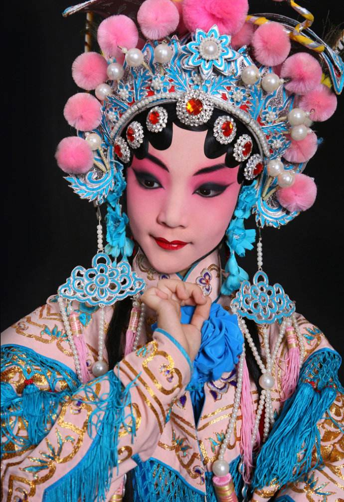
旦角 DAN (Women)
×
旦角 - Character Description
英文术语：DAN (Woman)
中文释义：扮演女性人物。根据所演人物类型和表演艺术特点，又分为闺门旦、
青衣旦、正旦、奴旦，泼辣旦、鬼狐旦，摇旦等。
英文释义： Dan is a general term for female characters. In accordance with
characteristics and features of the roles played, Dan falls into several different subcategories:
Gui Men Dan, Qing Yi Dan, Zheng Dan, Nu Dan, Po La Dan, Gui Hu Dan,
and Yao Dan.。
具体分类：
中文术语：青衣
英文术语：QING YI (Virtuous Woman)
中文释义：多扮演身世清苦或遭遇不幸的青、中年妇女，因其身穿青色苦褶子，
故称青衣旦，或简称“青衣”。她们具有吃苦耐劳，性格善良，老成凝重，品格
优秀，端庄贤淑，举止大方，道德情操高尚，不苟言笑等特点。
英文释义：Qing Yi is young or middle-aged woman who have experienced hardships
and misfortunes. Dressed in cyan, they are called Qing Yi Dan, or Qing Yi, which means
cyan clothes. They are kind, serious, dignified, virtuous, and are willing to bear
hardships.
中文术语：闺门旦
英文术语：GUI MEN DAN (Unmarried Young Girl)
中文释义：主要扮演待字闺中的青春少女。大家闺秀为官宦富豪人家小姐，行动
拘谨，不苟言笑，具有“行不动裙、笑不露龈”的特点，一般穿褶子和钳子，捆
大头，用摺扇；小家碧玉出身于劳动人民家庭，爽朗活泼，一般穿色调鲜艳的褶
子，下穿彩裤，不穿裙子，捆大头，梳偏转或扎毛辫，多用手巾，不用摺扇。
英文释义：Gui Men Dan is unmarried young girls. They can be from noble families
or of humble birth. Those from noble families are overcautious and serious, “walking
without moving their dress and smiling without showing their teeth”. They are dressed
gorgeously and wear a complicated hairstyle, holding a fan. Those of noble birth are
cheerful and vivacious, wearing colorful robes and pants instead of a dress and holding
a handkerchief instead of a fan. Their hair is also tightened and is parted on one side or
braided.
中文术语：正旦
英文术语：ZHENG DAN (Elite Woman)
中文释义：多扮演贤淑端庄，有一定地位的中年妇女。如贤淑端庄的后妃、夫人
等中年妇女，穿披着蟒，或宫装。
英文释义：Zheng Dan is dignified middle-aged women with higher social statuses,
such as imperial concubines and wives of high officials who wear Mang (court robes).
中文术语：泼辣旦
英文术语：PO LA DAN (Feisty Woman)
中文释义：扮演性格泼辣的中年妇女，具有“垮嘴瞪眼直挺身”的特点。
英文释义：Po La Dan is a subtype of Zheng Dan, usually middle-aged
feisty women. In order to stress their personality, their jaws are often dropping, eyes
staring and backs straightened.
中文术语：奴旦
英文术语：NU DAN (Maidservant)
中文释义：多扮演天真活泼、机警伶俐的丫环，婢女或宫女之类的人物。动作多
轻快，步法带弹性，穿小旦褶子、彩裤；有的外套花缎背心，拴风带，系围腰，
捆大头或扎毛辫，用团扇。
英文释义：Nu Dan are servant girls who are mostly innocent, vivacious, vigilant and
clever. A typical Nu Dan is light-footed, wearing robes for Xiao Dan and colorful pants.
Some also wear a dornick vest, with a decorative belt around their arms and a single
piece of cloth wrapped around hips and a moon-shaped fan in hands. They braid their
hair or wear the Da Tou hairstyle.
中文术语：花旦
英文术语：HUA DAN (Vivacious Young Woman)
中文释义：多扮演性格明快活泼或轻浮放浪的青年妇女，具有“七分灵巧三分笑”
的特点。根据剧中人物的特定身份，如系烟花妓女，则称“烟花旦”；如系神女
仙姬，则称“神仙旦”。
英文释义：Hua Dan is young women who are either vivaciousness or light-minded,
also smart and laugh a lot. There are several names of Hua Dan based on what the roles
are. For example, a prostitute would be called Yan Hua Dan (Yan Hua refers to
prostitute) and a fairy would be called Shen Xian Dan (Shen Xian means celestial
beings).
中文术语：武旦
英文术语：WU DAN (Woman with Martial Arts)
中文释义：扮演勇武的女性，表演上着重武打，要求具有翻腾扑跌等武功和“打
出手”等特技，不扎靠，穿打衣战裙，多为侠女、仙女及女妖之类的人物。
英文释义：Wu Dan refers to valiant female characters skilled in martial arts such as
rolling, jumping, tumbling and some acrobatic routine such as Da Chu Shou (launching
weapons). Wearing martial jacket and skirt instead of stage armors, most of them are
chivalrous women, fairies and female demons.
中文术语：刀马旦
英文术语：DAO MA DAN (Female Warrior)
中文释义：主要扮演擅长武艺、带军作战的青壮年女性，武打不如武旦，表演着
重唱做和舞蹈，要求具有把子功、翎子功等，扎女儿靠，戴女帅盔。
英文释义：Dao Ma Dan refers to young or middle-aged female characters skilled in
the martial arts and commanding troops. Wearing stage armors and helmets for female
generals, Dao Ma Dan emphasizes more on singing, dancing, and gestures than martial
arts. They master some special acrobatic skills such as Ba Zi Gong (fighting techniques)
and Ling Zi Gong (the skills to sway the feathers on helmet).
中文术语：鬼狐旦
英文术语：GUI HU DAN (Female Ghost or Fox)
中文释义：川剧独特的旦行类别。综合花旦、武旦，刀马旦、青衣旦的特点而形
成，专演剧中鬼狐化身的人物。鬼旦耍绫子，狐旦耍翎子，是二者的专功。表演
上要求身段灵动，步法矫健，掉形换影，飘忽不定，具有“快、灵、惊、诧，疑”
的体态特点。
英文释义：Gui Hu Dan is a unique subtype of Dan in Sichuan Opera. Combining the
features and characteristics of Hua Dan, Wu Dan, Dao Ma Dan, and Qing Yi Dan, Gui
Hu Dan is the role of women who are transformed from ghosts or foxes. Gui Dan
(transformed from ghosts) is good at waving satin band and Hu Dan (transformed from
foxes) swaying feathers on their heads. A flexible body and swift movements are
required. They can be quick, dexterous, surprised, and suspicious in their performance.
中文术语：老旦
英文术语：LAO DAN (Elderly Woman)
中文释义：扮演老年妇女，着重突出老年人的形体特点，唱用本嗓，穿戴因身份
而异。
英文释义：Lao Dan is aged women. The postures and features of the elderly are
highlighted in their performance. They sing in their natural voices and their costumes
vary based on their identities.
中文术语：娃娃旦
英文术语：WA WA DAN (Girl)
中文释义：扮演幼年女孩的角色。
英文释义：Wa Wa Dan is the role of little girls.
中文术语：丑旦
英文术语：CHOU DAN (Clownish Woman)
中文释义：类似京剧的彩旦，扮演奸刁刻薄或鄙俗可笑的妇女，习惯上都由丑角
演员扮演，属丑行。一般不包大头，戴额子或用青绫帕，也有的穿“时装”。
英文释义：Chou Dan is a role similar to Cai Dan in Beijing Opera. It represents women
who are treacherous or vulgar. It belongs to the category of Chou and is customarily
played by the performers of Chou. Instead of wearing the Da Tou hairstyle, Chou Dan
usually wears a diadem or green satin headscarf. Some of them also have “fashionable
clothes” on.
中文术语：摇旦
英文术语：YAO DAN (Woman who is fierce, jealous or funny)
中文释义：川剧独特的旦行类别。扮演凶狠悍妒或滑稽风趣之类的妇女，包大头，
有的贴太阳膏，唱念中常耍花腔，用弹音，加语尾，多为鸨母、媒婆、晚娘、丑
女、悍妇、傻丫头等。
英文释义：The role is women who are fierce, jealous or funny. Some of them wear Da
Tou hairstyle while others wear Tai Yang Gao. They sing and recite with the skill of
coloratura, a flap of their tongue and some typical endings when finishing sentences.
Most of them are bawds, matchmakers, stepmothers, ugly women, hellcats, silly girls
and so on.
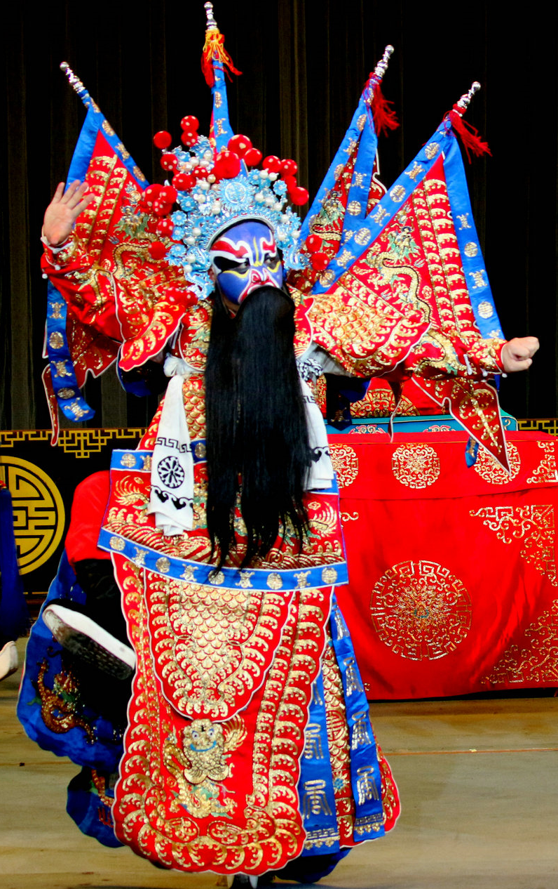
净角 JING (Man with Painted Face)
×
净角 - Character Description
中文术语：净
英文术语：JING (Man with Painted Face)
中文释义：川剧行当的基本类型之一。花脸（因面部勾画脸谱而得名）的旧称。
花脸行一般按人物气质及表演特点等不同而分别为文、武两类（但分支类型只相
对而称“武花脸”，不称“文花脸”）。花脸行演员要求面庞宽大，身材魁梧，嗓
音浑厚而宏亮，并具有扎实的唱、念、做、打基本功。
英文释义：Jing is a basic type of role in Sichuan Opera, formerly known as Hua Lian
(Painted Face). Jing roles are further divided into the Wen (civil) and Wu (martial)
according to their personalities and features. (However, there is only the term “Wu Hua
Lian”, but no term “Wen Hua Lian”.) The actors of Hua Lian should be tall and strong,
with a big face and sonorous voice, and they are required to be arduous and well trained
in singing, reciting, acting and fighting.
具体分类：
中文术语：大花脸
英文术语：DA HUA LIAN (Main Hua Lian)
中文释义：大花脸主要指剧中的显要人物。此类角色多穿蟒袍玉带，故又称袍带
花脸。
英文释义：Da Hua Lian is people of power and influence. They usually wear Mang
(Court Robe) and Yu Dai (Stiffened Jade Belt), so that they are also called Pao Dai Hua
Lian (Pao Dai means robe and belt).
中文术语：粉脸
英文术语：FEN LIAN (Jing with Pink Face)
中文释义：实际为袍带花脸的一种，又称“粉净”。多扮演权奸佞臣或无道昏君
之类的人物，常穿蟒。川剧的粉净，不似京剧粉净那样画涂浓厚的白粉，只是在
脸上揉上一层淡淡的水粉，因而称为“肉粉脸”。
英文释义：Fen Lian, also called Fen Jing, is a type of Pao Dai Hua Lian. Fen Lian
mostly is treacherous court officials and unscrupulous rulers who usually wear Mang
(Court Robe). Fen Jing in Sichuan Opera does not put thick white powders on their face
like those in Beijing Opera do. Instead, they just put on a thin layer of liquid powder,
so they are also called Rou Fen Lian (Rou Fen means pink, like the color of our skin).
中文术语：靠甲花脸
英文术语：KAO JIA HUA LIAN (Hua Lian with Martial Arts)
中文释义：多扮演武将，扎靠子，穿龙箭，讲究架子功。
英文释义：Kao Jia Hua Lian is military officers who wear Kao Zi (Stage Armor) and
Long Jian (dragon robe with fitted sleeves for shooting arrows). They should act their
postures and gestures well.
中文术语：铜锤花脸
英文术语：TONG CHUI HUA LIAN (Hua Lian Who Are Very Good at Singing)
中文释义：戏曲中花脸的一种，偏重唱工
英文释义：Tong Chui Hua Lian is a type of Hua Lian who emphasizes singing a lot.
中文术语：草鞋花脸
英文术语：CAO XIE HUA LIAN (Hua Lian Wearing Straw Sandals)
中文释义：川剧独特的净行类别。多扮演草莽英雄或性格直爽、粗犷、风趣之类
的人物。一般着打衣，不一定都穿草鞋。表演着重唱做，特别讲究式口美。
英文释义：Cao Xie Hua Lian is a unique subtype of Jing in Sichuan Opera. They are
grassroots heroes or people who are frank, straightforward and humorous.
中文术语：猫儿花脸
英文术语：MAO ER HUA LIAN (Cat Hua Lian)
中文释义：川剧独特的净行类别。在剧中多作为粉脸角色的爪牙，或饰心怀叵测
的小人。其脸谱的特点是：不勾满整个脸部，只在脸上画一块比三花脸（丑）的
“豆腐块”面积稍大的“阅饼”，故又称“二饼饼花脸”。
英文释义：Mao Er Hua Lian is a unique subtype of Jing in Sichuan Opera. They are
the partisans of Fen Lian or bad guys with evil intentions. The features of their makeup
are as follows: the makeup does not cover the whole face, instead, they just draw a Yue
Bing (the shape of pancake) which is a little bigger than the Tofu shape of San Hua Lian
(Chou) on their face; hence they are also called Er Bing Bing Hua Lian.
中文术语：二花脸
英文术语：ER HUA LIAN (Less Important Hua Lian)
中文释义：因其所扮人物均非剧中主要净角，故称“二花脸”，也称“副净”或
“二净”。
英文释义：Er Hua Lian, Fu Jing (Fu means vice) or Er Jing (Er means secondary) are
roles of Jing of less importance.
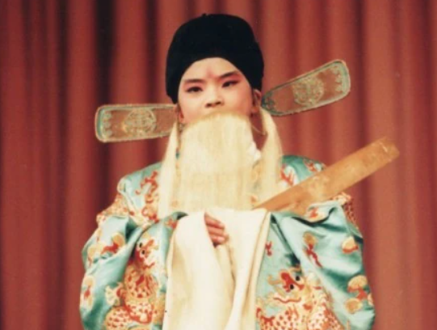
末角MO(a supporting male lead)
×
末角 - Character Description
中文术语：末
英文术语：MO (Servant)
中文释义：扮演一般奴仆者称末角, 中年称中末, 老年称老末。
英文释义：Mo, are the roles of servants. Middle-aged servants are called Zhong Mo
(Zhong refers to the middle) while elderly servants are called Lao Mo (Lao means aged).
末的相近行当:
中文术语：须生
英文术语：XU SHENG (Middle-aged or Elderly Sheng with Whiskers)
中文释义：川剧行当的基本类型之一，旧称末，亦称生角。与小生相对应，扮演
除花脸、丑角之外的中、老年男性人物，因戴胡须（亦称髯口、口条）而得名。
须生行演员多以真声为主，要求嗓音宏亮，身材适度，文武兼备。
英文释义：Xu Sheng is a basic role in Sichuan Opera, formerly known as Mo or Sheng
Jue. Opposite to Xiao Sheng, Xu Sheng is middle-aged or elderly men (but not Hua
Lian and Chou). They are called Xu Sheng because of wearing whiskers (Xu), and their
voices are natural and resonant. The actors of Xu Sheng are also required to be of
moderate stature and be good at singing, reciting and fighting.
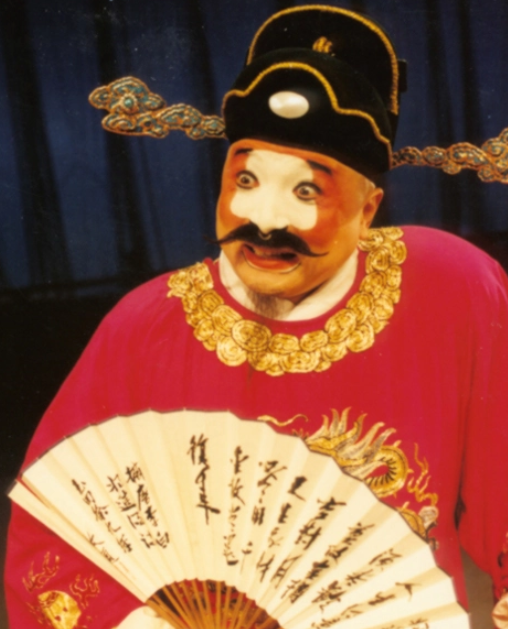
丑角CHOU(the jester)
×
丑角 - Character Description
中文术语：丑
英文术语：CHOU (Clown)
中文释义：俗称“小花脸”“三花脸”。川剧丑行扮演的人物多种多样，上至帝王
将相，下至市井平民，三教九流，医卜星相，男女老幼，以至神仙鬼怪，无所不
有。有清正廉明，心地善良，语言幽默，行为滑稽的好人，也有奸诈刁恶，悭吝
卑鄙，口蜜腹剑，人面兽心的恶徒。丑行之中又分为袍带丑、官衣丑、龙箭丑、
褶子丑、襟襟丑、烟子丑、武丑、老丑等。扮演女性人物的称丑旦、丑婆子。
英文释义：Chou is commonly known as “Xiao Hua Lian” (Little Flower Face) or “San
Hua Lian” (Least Important Hua Lian). Chou includes a variety of characters, from
emperors, generals, ministers to common people in various trades, from celestial beings
to ghosts and monsters, from the virtuous, who are honest and uptight, kind and
humorous to the wicked who are evil, mean and two-faced, and men, women, the
elderly and children are all included. Chou is subdivided into various classes: Pao Dai
Chou, Guan Yi Chou, Long Jian Chou, Zhe Zi Chou, Jin Chou, Yan Zi Chou, Wu Chou,
and Lao Chou and so on. The female roles of Chou are called Chou Dan or Chou Po Zi.
具体分类：
中文术语：袍带丑
英文术语：PAO DAI CHOU (Clown of Kings, Dukes and High Officials)
中文释义：扮演王侯将相、显要官员，穿蟒，挂玉带，也有插翎子、执朝笏的，
表演上重唱做及舞蹈身段。
英文释义：Pao Dai Chou is kings, dukes, generals, ministers and high officials. They
wear Mang (Court Robe) and Yu Dai (Stiffened Jade Belt). Some also have Ling Zi
(Feathers) on their hats and carry Chao Hu (a ritual tablet used at court for the taking
of notes). Singing, acting, and dancing are noted in their performance.
中文术语：官衣丑
英文术语：GUAN YI CHOU (Clown of High Officials)
中文释义：袍带丑的一种。多扮演公卿大夫、文职官吏。穿官衣，挂玉带，戴尖
纱帽或圆纱帽。
英文释义：Guan Yi Chou is a subtype of Pao Dai Chou. Most of them are senior
officials of civil service. They wear Guan Yi (Official Robe), Yu Dai (Stiffened Jade
Belt) and Jian Sha Mao (Pointed Gauze Hat) or Yuan Sha Mao (Rounded Gauze Hat).
中文术语：龙箭丑
英文术语：LONG JIAN CHOU (Clown of Fatuous Rulers)
中文释义：川剧独特的丑行类别。多扮演暴虐无道的昏君，着龙箭，戴“独独冠”，
插翎子。
英文释义：Long Jian Chou is a unique subtype of Chou in Sichuan Opera. Mostly they
are tyrannical and unscrupulous rulers who wear Long Jian (dragon robe with fitted
sleeves for shooting arrows) and Du Du Guan (a multifunctional helmet) with feathers
attached on it.
中文术语：褶子丑
英文术语：ZHE ZI CHOU
(Clown of Nasty Young Men)
中文释义：褶子丑是川丑中最为常见的一种角色类别，主要扮演青年男性中行为
不端的文人、商贾等，角色数量繁多，生动鲜活。有胸无点墨、不学无术的纨绔
子弟，有倚仗权势、横行霸道的衙内公子哥儿，有心狠手毒、阴险残忍的奸佞宵
小之徒，有市井无赖、无行文人，有为富不仁的富商巨贾。
英文释义：Zhe Zi Chou is the most common type of Chou in Sichuan Opera. With a
large number of roles, Zhe Zi Chou vividly reflects the true and everyday life. They
include rich boys who are lacking in learning and practical ability or bullies who are
sons of powerful officials, heartless and cruel rascals, literati of misconduct, unkind
rich merchants and so on.
中文术语：方巾丑
英文术语：FANG JIN CHOU (Literary Clown)
中文释义：多扮演头戴方巾的谋士、书吏、刀笔、方士之流。
英文释义：Fang Jin Chou, are advisers, scribes, lawyers and warlocks.
中文术语：襟襟丑
英文术语：JIN JIN CHOU (Clown with Rags)
中文释义：襟襟丑是以服装来分类的一种丑角类别。在四川方言中，常用“穿襟
襟、挂绺绺”来形容一个人的衣服破旧陋烂。所谓襟襟丑，就是丑行中穿“富贵
衣”的一种角色类型。他们多扮演生活在社会底层的小人物，如破落子弟、乞丐、
盗贼、贩夫走卒等。
英文释义：Jin Jin Chou is a kind of clowns who are dressed with rags. In the Sichuan
dialect, Jin Jin and Liu Liu mean rags. Jin Jin Chou is the role of Chou who wears a
beggar’s gown. They represent the underclasses such as beggars, thieves, peddlers，
menial servants and people who meet with difficulties.
中文术语：烟子丑
英文术语：YAN ZI CHOU (Clown of Middle-aged Underclass)
中文释义：烟子丑是最具四川地方特色的行当类别，与襟襟丑颇有相似之处，二
者所扮演角色的身份地位、服饰装扮等多有相似，因此也有观点将烟子丑归为襟
襟丑一类。二者的主要区别在于，烟子丑扮演的角色涵盖面广，以中年人为主，
如差人、皂隶、店家、裁缝、屠户、木匠、长年、小生意人等，均以烟子丑应工。
英文释义：Yan Zi Chou is the most distinctive role of Sichuan Opera
. It shares some similarities with Jin Jin Chou. As their social statuses and costumes are
similar in many ways, some believe that Yan Zi Chou belongs to Jin Jin Chou. The main
difference is that Yan Zi Chou covers a wider range of people, primarily middle-aged
men, including officers in Yamen (administrative office in feudal China), shop owners,
tailors, butchers, carpenters, boatmen, small businessmen and so on.
中文术语：武丑
英文术语：WU CHOU (Clown with Martial Arts)
中文释义：武丑是以功法程式和服装穿戴来划分的一个丑行类别，其特点是身着
打衣，脚穿打鞋，翻滚腾跃，身手灵活，敏捷机警，兼用武生和丑行功法，多扮
演身怀武功特别是轻功与绝技一类的江湖侠士、义盗等角色。
英文释义：Wu Chou, wearing Dayi (fighting clothes) and Daxie ((fighting shoes), are
physically dexterous and good at martial arts. Their acting is a combination of Wu
Sheng and Chou, and they are often swordsmen or righteous thieves, skilled at
acrobatics and moving very swiftly and lightly.
中文术语：老丑
英文术语：LAO CHOU (Aged Clown)
中文释义：老丑是以角色年龄、性别为标准来划分的一个川丑类别，指剧中年老
体迈的男性角色。从扮相上看，老丑的脸谱与其他丑角不同，一般不画豆腐干，
而是画螃蟹脸，也可以是菊花形、核桃形或蝴蝶形，大同小异，表示老年人脸上
的皱纹。
英文释义：Lao Chou represents elderly male roles in Sichuan Opera. The makeup of
Lao Chou is different from that of other roles of Chou. Instead of having a Dou Fu Gan
(dried bean-curd) makeup, they are painted a crab face or chrysanthemum, walnut and
butterfly face to indicate the wrinkles.
中文术语：娃娃丑
英文术语：WA WA CHOU (Clown of Teenage Boys)
中文释义：娃娃丑是川剧丑行中的一个独立类别，扮演剧中顽皮可爱、言行活泼
的少年男性，有专门的服装穿戴，化装戴孩儿发，有的头顶以红绳捆扎头发，画
白鼻梁。从穿戴上看，娃娃丑与川剧的帕帕生基本一致，但帕帕生主要是扮演小
男孩。从行当功法上看，娃娃丑由丑行扮演，以丑角功法表演，行动跳跃，言语
无忌，二者的区别比较明显。
英文释义：Wa Wa Chou refers to naughty teenage boys. It is an independent
subcategory of Chou roles in Sichuan Opera. The actor of Wa Wa Chou wears
specialized costumes and makeup, including wigs for children, white paint on nose, and
red hair strings that are tied up to their hair on the top of heads. The costume is basically
the same as that of Pa Pa Sheng, except that Pa Pa Sheng is the role of little boys.
Besides, Wa Wa Chou is vivacious, fearless, and capricious. It belongs to the role of
Chou and characterized by the features of Chou.
中文术语：生丑
英文术语：SHENG CHOU (Clown with the Characteristics of Sheng)
中文释义：生丑，又称文生丑，是川剧中一个独特的行当类别。生丑是出现于20
世纪五六十年代的一个新概念，是介于文生与褶子丑之间的一类角色。其特点是：
由文生行扮演具有丑行角色某些性格和行为特征的文生角色，演员鼻梁上涂抹白
粉，具有丑行角色的面部标志。这些角色通常由文生行演员扮演，按文生行角色
穿戴装扮，采用文生功法身段表演，主要是以角色特立独行的性格特征区别于一
般文生，而与丑行角色有某些相似之处。其“怪”的个性明显多于“丑”的共性，
因为其“怪”而产生的幽默和滑稽，恰好通过丑角的白鼻梁得到彰显。
英文释义：Sheng Chou, also known as Wen Sheng Chou, is a unique type of role in
Sichuan Opera. Sheng Chou originated in the 1950s to 1960s with combined features
of Wen Sheng and Zhe Zi Chou. The features are as follows: The role of Sheng Chou,
with some characteristics and behaviors of Chou, is played by actors of Wen Sheng. His
nose is covered by white powder, which is a typical sign of Chou. The costumes and
acting routines are the same as Wen Sheng, but the characteristics and personalities are
similar to Chou roles. Instead of being ugly, they are more impressive because of their
weirdness and funniness, which are highlighted by the white paint on their noses.
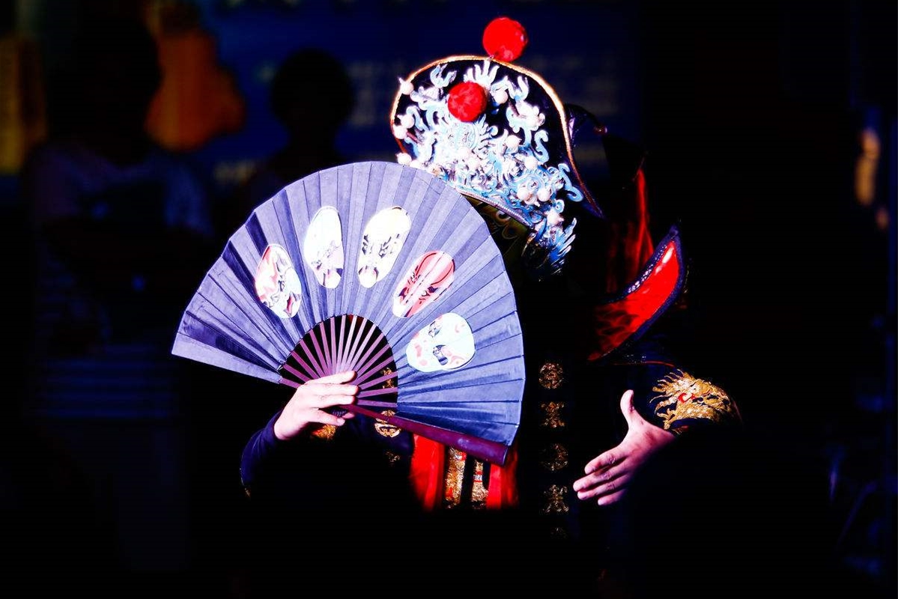
变脸Skills and Techniques
×
变脸
英文术语：face-changing
中文释义：川剧变脸是川剧表演的特技之一，用于揭示剧中人物的内心及思想感情的变化，即把不可见、不可感的抽象的情绪和心理状态变成可见、可感的具体形象——脸谱。川剧变脸是运用在川剧艺术中塑造人物的一种特技。是揭示剧中人物内心思想感情的一种浪漫主义手法。
英文释义：Sichuan dramatic face is one of the special effects performed in Sichuan opera, which is used to reveal the changes
in the hearts and thoughts of the characters in the drama, that is, to change the invisible and imperceptible abstract
emotions and mental states into visible and perceptible concrete images-facial makeup. Face changing in Sichuan Opera is
a special effect used to shape characters in Sichuan opera art. It is a romantic technique to reveal the inner thoughts
and feelings of the characters in the drama.
Sichuan Opera Face-Changing
In Sichuan Opera, as the plot develops and the characters’ inner worlds shift, their facial makeup must change
accordingly. Performers use face-changing techniques to transform abstract emotions and psychological states into
visible, tangible expressions.
Evolution of Face Masks
Initially, the face masks used in Sichuan Opera were made from paperboard. Over time, these evolved into masks painted
on coarse paper. During performances, layers of masks were removed, often concealed by fireworks or a folding fan. After
the founding of the People's Republic of China, as the face-changing techniques rapidly advanced, the materials for
making face masks developed into the silk fabrics used today, greatly facilitating performers’ work.
Design of Face Masks
The face masks used in face-changing often depict unknown characters, including warriors and ghosts. However, well-known
masks, such as those of Guan Yu, Cao Cao, or Bao Zheng, are generally not used for face-changing. The brushwork for
these masks should be sharp and bold, with strong color contrasts to create a dazzling effect on stage. The color
schemes and design meanings are based on the character’s moral qualities and role type in the play, whether to praise,
satirize, criticize, or condemn. All of these can be reflected through the colors used in the face masks.
Techniques
There are three main techniques for face-changing: "Wiping," "Blowing," and "Pulling."
1.Wiping: This technique involves applying makeup paint to specific parts of the face. During the performance, the
performer wipes their face with their hand, changing the face color instantly. If the entire face needs to change, the
paint is applied to the forehead or eyebrows. If only the lower part of the face needs to change, the paint is applied
to the cheeks or nose. The character Xu Xian in The Legend of the White Snake uses the "Wiping" technique.
2.Blowing: In this technique, powdered makeup, such as gold, silver, or ink powder, is placed in a special container.
During the performance, the actor blows the powder onto their face by leaning close to the container, ensuring to close
their eyes, mouth, and hold their breath. In The Capture of Zidu Alive, the powder is placed in a wine cup, but often a
small box with powder is placed on the stage floor. The actor uses a dance move to lean close and blow the powder onto
their face.
3.Pulling: This is a more complex technique. The face masks are painted on silk sheets in advance, cut to size, with a
string attached to each mask. The masks are then layered on the actor’s face, with the strings hidden inconspicuously on
their costume (such as on a belt). As the plot progresses, the actor pulls the masks off one by one, concealed by their
dance moves. For example, the bowl bearer in The Legend of the White Snake can change to seven or eight different faces
in colors like green, red, white, and black. Characters like the thief in Old Zhenglou and Nie Long in Wangniangtan also
use the "Pulling" technique. This method requires skill. First, the adhesive for sticking the masks should not be too
strong, to ensure the masks can be pulled off easily without accidentally removing all of them at once. Second, the
movements must be clean and quick, with skillful misdirection to distract the audience’s attention.
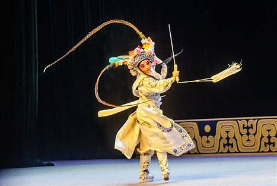
藏刀Skills and Techniques
×
藏刀
中文释义：藏刀是川剧表演中的一种特技
英文术语：Broadsword-hiding
中文释义：藏刀是川剧著名绝技之一，运用耍刀技巧揭示人物心理、性格特征的表演特技。
英文释义：Broadsword-hiding is one of the famous stunts in Sichuan Opera. It is a stunt to reveal the psychological and
personality characteristics of characters by using the skill of playing knives.
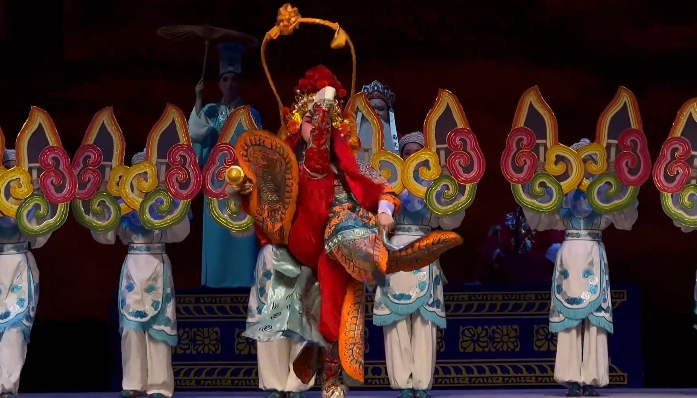
踢眼Skills and Techniques
×
踢眼
英文术语：Eye Kicking
中文释义：踢眼是川剧中一种特殊的表演技艺，演员通过精准的控制，使脚看似踢到自己眼睛附近，但实际并未造成伤害。这种表演对身体的灵活性和协调性要求极高，展现了演员的高超技巧。
英文释义：Eye Kicking is a unique performance skill in Sichuan Opera where the performer appears to kick near their own eye
without causing injury. This act requires exceptional flexibility and coordination, showcasing the performer’s advanced
techniques.
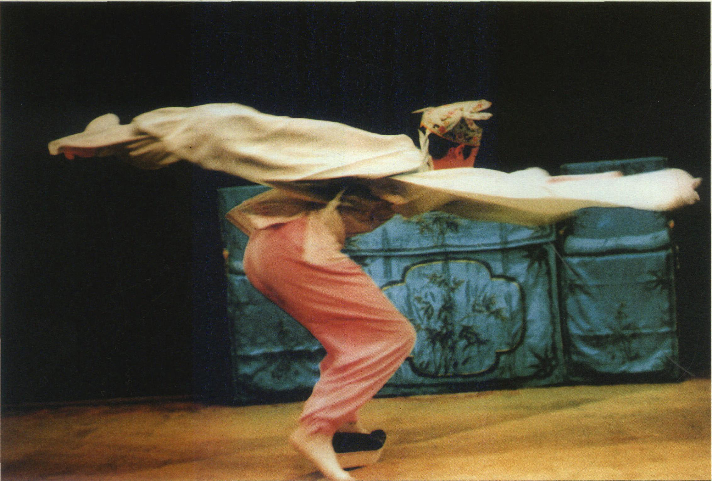
褶子功Skills and Techniques
×
褶子功
英文术语：Robe Manipulating
中文释义：褶子功是川剧中文生角色的基本技艺之一，主要指的是小生演员操控长袍的表演技巧。
英文释义：Zhe Zi Gong (Robe Manipulating) is one of the basic skills for the Wen Sheng role in Sichuan Opera, primarily
involving techniques where the Xiao Sheng character manipulates a robe.
具体分类:
踢袍
英文术语：Robe Kicking
中文释义：踢袍是川剧中的传统技艺，演员通过高难度的踢腿动作，巧妙地将长袍踢起并保持姿态。这一动作不仅展现了演员的灵活性，还增强了舞台上的视觉效果。
英文释义：Robe Kicking is a traditional skill in Sichuan Opera where the performer skillfully kicks up their long robe while
maintaining their posture. This move highlights the performer's agility and enhances the visual impact on stage.
甩水袖
英文术语：Water Sleeve Flicking
中文释义：甩水袖是川剧中的经典表演技艺，演员通过手臂的快速摆动，将水袖甩出优美的弧线，用于表达人物的情感和内心世界。这种技艺要求演员具备极高的身体控制能力。
英文释义：Water Sleeve Flicking is a classic performance technique in Sichuan Opera, where the performer swiftly flicks the
long silk sleeves to create graceful arcs, expressing the emotions and inner thoughts of the character. This skill
requires the performer to have exceptional control over their movements.
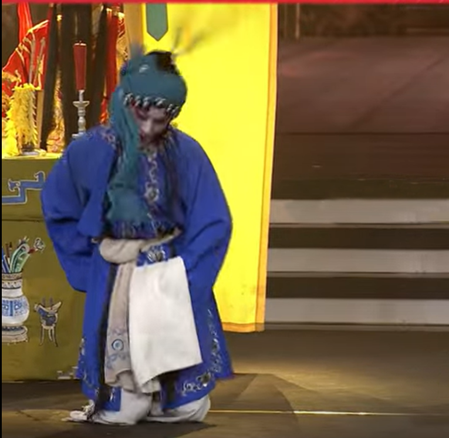
水发功/甩发功Skills and Techniques
×
水发功/甩发功
中文术语：水发功
英文术语：Hair Flinging
中文释义： 水发功是一种包括手、眼、身、发、步五个传统技巧的表演技艺，用于表达角色的愤怒、惊慌和绝望。
英文释义： Shui Fa Gong (Hair Flinging) is another skill in Sichuan Opera, encompassing five traditional techniques (hand,
eye, body, hair, step), used to depict the character’s anger, panic, and desperation.
中文术语：甩发功
英文术语：Hair-flinging Technique
中文释义： 甩发功是川剧表演中的一项传统技巧，演员通过快速甩动头发，来表达角色的愤怒、绝望或强烈的情感。这一技巧要求演员的颈部和头部有很好的协调性，以达到视觉和情感上的冲击。
英文释义： Hair-flinging Technique is a traditional skill in Sichuan Opera where the performer rapidly flings their hair to
express intense emotions such as anger, despair, or agitation. This technique requires excellent coordination of the
neck and head to achieve a powerful visual and emotional impact.
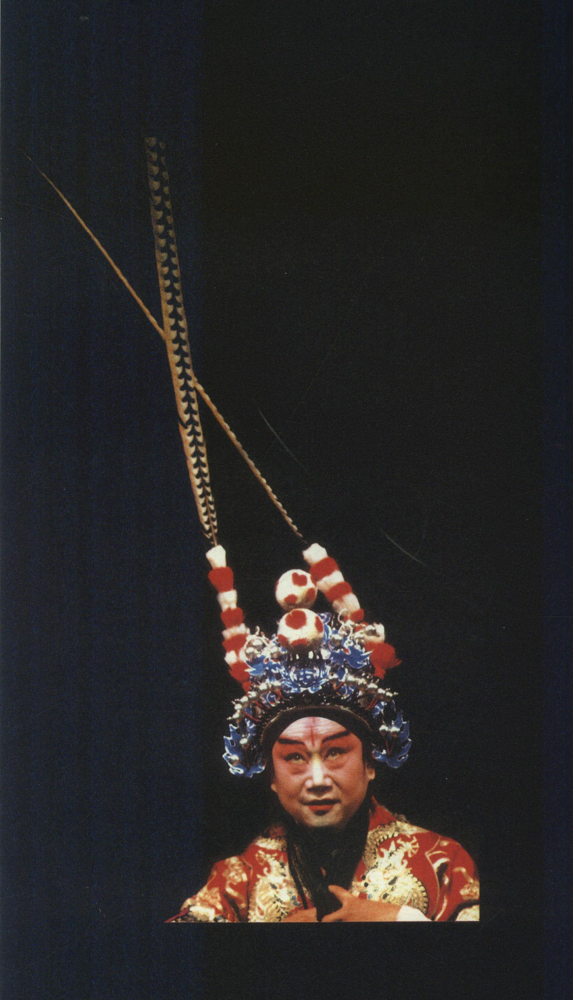
耍翎子Skills and Techniques
×
耍翎子
中文术语：耍翎子
英文术语：Feather Plume Manipulation
中文释义：耍翎子是川剧中的一种传统表演技艺，翎子，又称雉尾，是插于角色头盔两侧的装饰物，可用于男性或女性角色，尤其是少年武将或仙狐等角色，如《铁龙山》的铁木耳、《战洪州》的穆桂英、《小宴》的吕布和《别洞观景》的白鳝仙姑。演员通过精妙的头部和颈部动作，使翎子随之摆动，展现角色凌厉英武或潇洒飘逸的仪态。这种技艺要求演员具备极高的身体控制能力和表演经验。
英文释义： Feather Plume Manipulation is a traditional performance technique in Sichuan Opera. The "feather plume," also
known as "pheasant tail," is an ornament attached to the sides of the character's helmet, used by both male and female
roles, particularly young military generals or mythical figures like fox spirits. Examples include characters such as
Tie Muer in Iron Dragon Mountain, Mu Guiying in Battle of Hongzhou, Lü Bu in The Banquet, and the White Eel Fairy in
Appreciating the Scenery from Another Cave. Performers skillfully use head and neck movements to make the plume sway,
showcasing the character's sharp, heroic, or graceful demeanor. This technique requires the performer to have
exceptional control over their body and extensive performance experience.
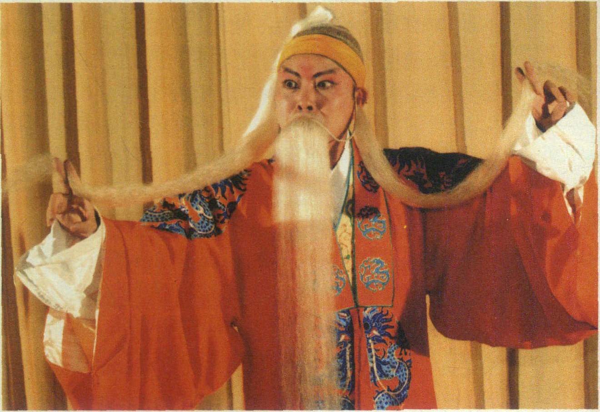
变胡须Skills and Techniques
×
变胡须
英文术语：Beard Manipulation
中文释义：
变胡须是川剧中的一项独特表演技艺。川剧中，人物的胡须称为“口条”，不同于话剧中临时粘贴的胡须，川剧的口条是事先用马尾、纱或人发缠绕在铁丝架上制作而成，有各种不同的形状和颜色。演出时，演员根据角色的年龄和性格选择合适的口条，并在表演中通过手部动作灵活地拨动、抚摸或改变胡须的位置，以表现角色的情感变化和内心世界。这种技艺要求演员具备高度的表演技巧和对角色的深入理解。
英文释义： Beard Manipulation is a unique performance technique in Sichuan Opera. The beards, known as "kou tiao," differ
from the temporary adhesives used in spoken drama. In Sichuan Opera, these beards are meticulously crafted from
horsehair, silk, or human hair wrapped around a wire frame, and come in various shapes and colors. During performances,
actors select a beard that matches the character’s age and personality, and skillfully manipulate the beard with hand
movements to stroke, adjust, or reposition it, thereby expressing the character’s emotional shifts and inner thoughts.
This technique demands a high level of performance skill and deep understanding of the character.
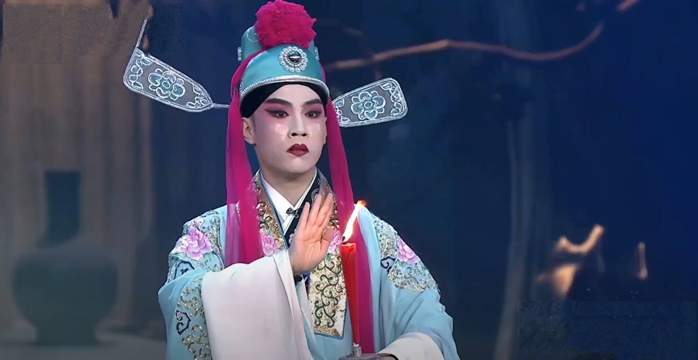
耍烛火Skills and Techniques
×
耍烛火
具体分类：
中文术语：燃烛
英文术语：Lighting the Candle
中文释义： 燃烛是川剧中的一种表演技巧，属于耍烛火的技能，通过在观众面前快速点燃和熄灭蜡烛，烘托出剧中角色的情感和气氛。
英文释义： Lighting the Candle is a performance technique in Sichuan Opera, part of the Shua Zhu Huo (Candle Manipulation)
skill, where the artist lights a candle in front of the audience to create a specific mood.
中文术语：灭烛
英文术语：Snuffing Out the Candle
中文释义： 灭烛是与燃烛相对应的表演技巧，演员能够在观众眼前快速熄灭蜡烛，用以表现角色的内心波动和紧张氛围。
英文释义： Snuffing Out the Candle is a corresponding technique to Lighting the Candle, where the performer extinguishes the
candle, contributing to the portrayal of the character's emotional turmoil and the tense atmosphere.
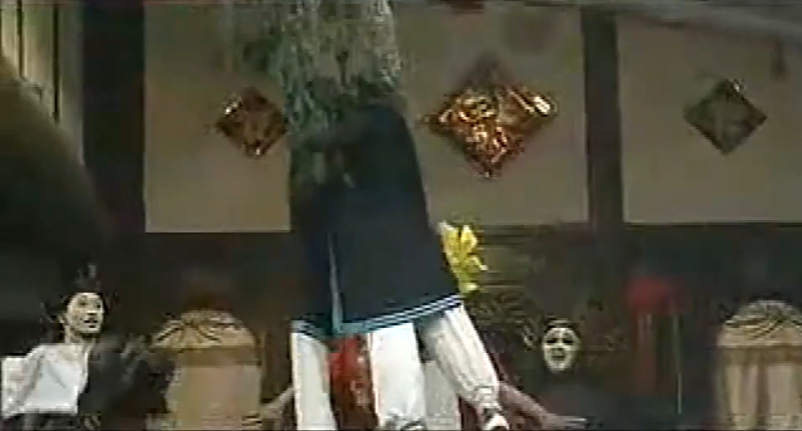
上吊Skills and Techniques
×
上吊
中文术语：上吊
英文术语：Hanging Oneself
中文释义： 上吊是一种表现角色自尽或绝望的戏剧动作，通过表演自缢的过程来增加戏剧冲突和张力。
英文释义： Hanging Oneself is a dramatic action in Sichuan Opera that portrays a character
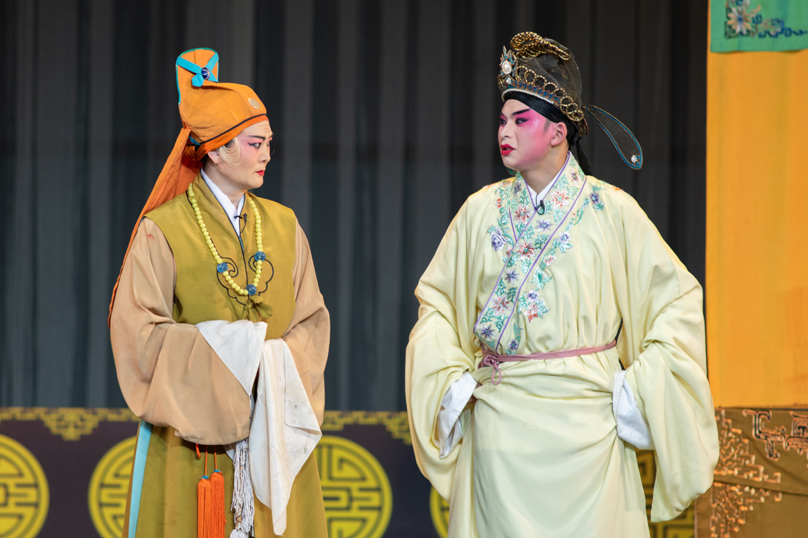
逼侄赴科classic operas
×
逼侄赴科
中文术语：逼侄赴科
英文术语：Forcing the Nephew to Take the Imperial Examination
中文释义：《逼侄赴科》是我国古典名剧《玉簪记》中的一节。讲述的是书生潘必正在赶考途中染病，寄宿在姑母主持的女贞观中养病，与观内青年道姑陈妙常暗中生情，潘生的姑母却被观主发现后，假借要他上京赶考，巧妙断绝二人关系，将二人拆散的强行拆散的故事。
英文释义：Forcing the Nephew to Take the Imperial Examination is excerpted from the famous classical Chinese drama The Jade Hairpin. In this story, the scholar Pan Bizheng, because of his sudden illness on the way to take the imperial examination, lodged at a Taoist temple where his aunt was the abbess. He secretly fell in love with the young Taoist nun Chen Miaochang. Unfortunately, their forbidden love was discovered by Pan’s aunt. She cleverly broke them up by forcing Pan to take the imperial examination.
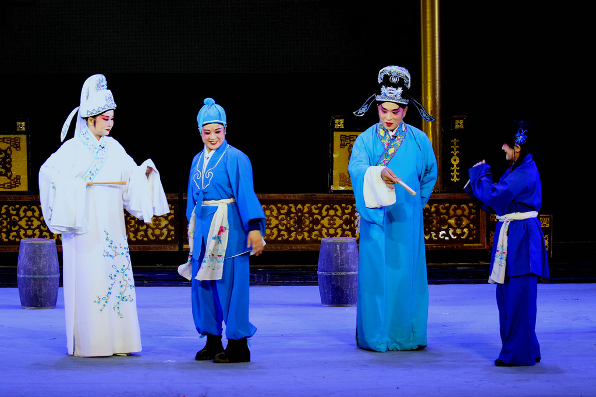
柳荫记classic operas
×
柳荫记
中文术语：柳荫记
英文术语：Love under the Willows
中文释义：《柳荫记》是川剧折子戏经典剧目。故事描写的是中国古代民间四大爱情故事中梁山伯与祝英台之间的凄美爱情。
英文释义：Love under the Willows is one of the classic excerpt dramas of Sichuan Opera. The story describes the beautiful but pathetic love of Liang Shanbo and Zhu Yingtai, which is one of the four folk love stories in ancient China.
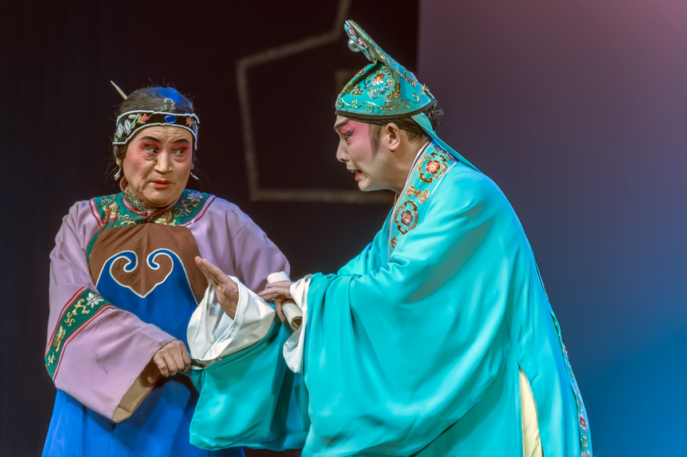
迎贤店classic operas
×
迎贤店
中文术语：迎贤店
英文术语：Yingxian Inn
中文释义：讲书生常诗庸游学在外，因盘缠用尽遭到店主婆的羞辱，常生只好在街头买自己的字画，结果收到赞赏和银两馈赠，常生有了银两后，店主婆立马改变了态度。
英文释义：Yingxian Inn describes the story of the scholar Chang Shiyong. Chang left home and started his study tour, during which he stayed at the Yingxian Inn. However, Chang was insulted by the landlady because he had run out of his money and could not afford the room rate. Chang had no choice but to sell his calligraphy and paintings on the street. Surprisingly, Chang’s works were appreciated and he made money from it his works. Knowing this, the landlady suddenly changed her disdainful attitude towards Chang.
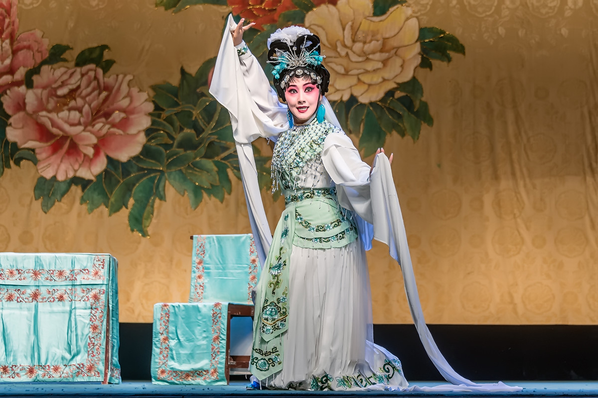
放裴classic operas
×
放裴
中文术语：放裴
英文术语：Saving Pei Yu
中文释义：《放裴》传统川剧《红梅记》中一折。讲述大学生裴禹不屈于贾似道的淫威，被囚贾府。贾暗中派遣家将廖尽忠欲将其杀害。此事，被无辜遭贾似道杀死的歌姬李慧娘得知,。于是她的魂灵匆匆前往书斋去救裴生的故事。本剧中小生的摺子功、水发功都是为了展现人物思想情绪的手段。
英文释义：SSaving Pei Yu is a part of the traditional Sichuan Opera, The Story of Red
Plum. It tells the story of Pei Yu and Li Huiniang. Refusing to yield to the Prime
Minister Jia Sidao, the scholar Pei Yu was confined in Jia’s house. Jia asked his servant
Liao Jinzhong to secretly murder Pei. However, the conspiracy was known by Li
Huiniang, the singing girl killed by Jia. Just in time, Huiniang’s soul reached the study
room and saved Pei Yu. In order to express the emotions of the characters, this drama
uses skills including Zhe Zi Gong (Robe-manipulating) and Shui Fa Gong (Hairflinging).
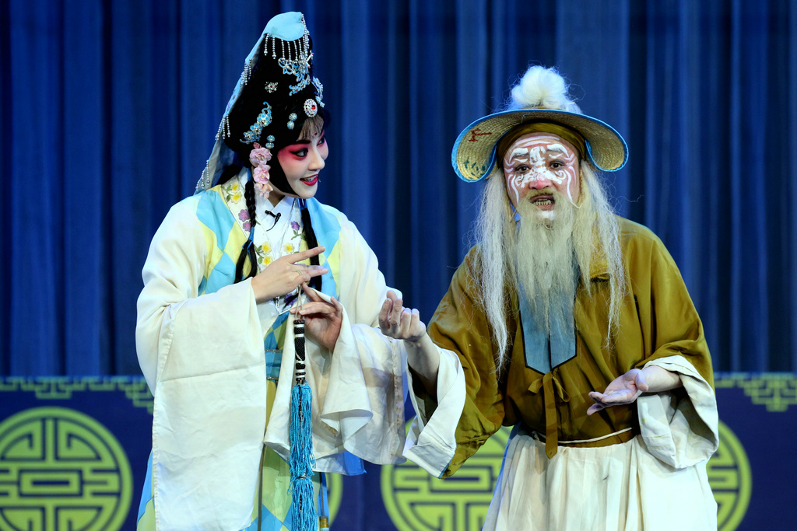
秋江classic operas
×
秋江
中文术语：秋江
英文术语：Qiujiang River
中文释义：《秋江》，又名《陈姑赶潘》，系传统剧目《玉簪记》之一折。讲述的是观主逼迫潘必正乘舟离开赶考，陈妙常前往追赶，在秋江河边，得到热心肠而又诙谐风趣的艄翁相助的故事。
英文释义：Qiujiang River is a part of the traditional drama The Jade Hairpin. In this
story, the scholar Pan was forced to leave the Taoist temple by his aunt. Chen
Miaochang, the girl he loved, chased after him hurriedly and eagerly. With the help of
an enthusiastic and funny helmsman at the bank of the Qiujiang River, the two met with
each other.
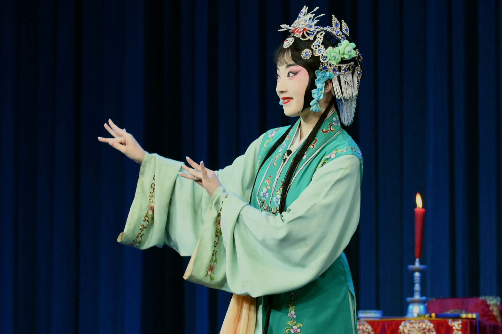
石怀玉惊梦classic operas
×
石怀玉惊梦
中文术语：石怀玉惊梦
英文术语：Catching Shi Huaiyu Alive to Reclaim the Magic Bead
中文释义：川剧折子戏。剧情为：武孝廉石怀玉进京赴考，途中旧病复发，幸得狐仙莲娘吐珠相救，二人结为夫妻。石怀玉高中状元，恩将仇报，设计毒害莲娘。莲娘见石怀玉丧心病狂，无可救药，只好索回丹珠，活捉石怀玉。此剧运用了燃烛、灭烛、变脸、上吊等特技，为小生行功夫戏。
英文释义：It is an excerpt play of Sichuan Opera. In this story, Shi Huaiyu, a successful
candidate for the imperial examination, collapsed on his way to take the examination.
Luckily, he was saved by a fairy fox, Lian Niang, who gave her own magic bead to Shi
and married him. However, when Shi Huaiyu came first in the imperial examination,
he betrayed Lian Niang and planned to murder her. Witnessing Shi’s cruelty, Lian Niang
had to capture Shi alive to take back her bead. The male role in this drama is Xiao
Sheng, and he showed skills and stunts like lighting the candle, snuffing out the candle,
face changing and hanging himself.
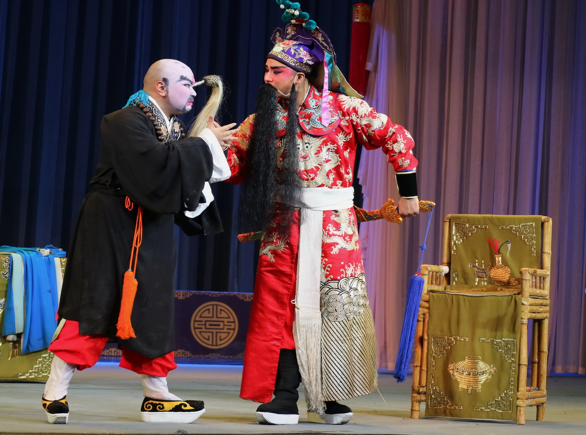
五台会兄classic operas
×
五台会兄
中文术语：五台会兄
英文术语：The Reunion of Two Brothers at the Wutai Temple
中文释义：讲述杨家兄弟杨延德和杨延昭在五台山相会的故事。宋时，杨家将屡遭奸臣迫害，五郎杨延德愤恨出家，在五台山削发为僧。十五年后的一日，五郎酒醉回寺，听见战马嘶鸣，心生疑惑，夜间客房盘查来人，原是六郎杨延昭，兄弟相会，百感交集。
英文释义：The Reunion of Two Brothers at the Wutai Temple describes the story of
Yang Yande and his brother Yang Yanzhao. In the Song Dynasty, generals of the Yang
family were continuously framed by treacherous court officials. Filled with Out of
indignation, Yang Yande, the fifth son of the Yang family, shaved his hair and became
a monk at the Wutai Temple. 15 years later, one day, Yang Yande heard the whinny of
a horse when he drunkenly went back to the temple. Doubting about it, Yande
questioned the horse’s owner in the guest room at night. He found that the man was his
brother Yang Yanzhao. Reuniting in this way, they were full of complex emotions.
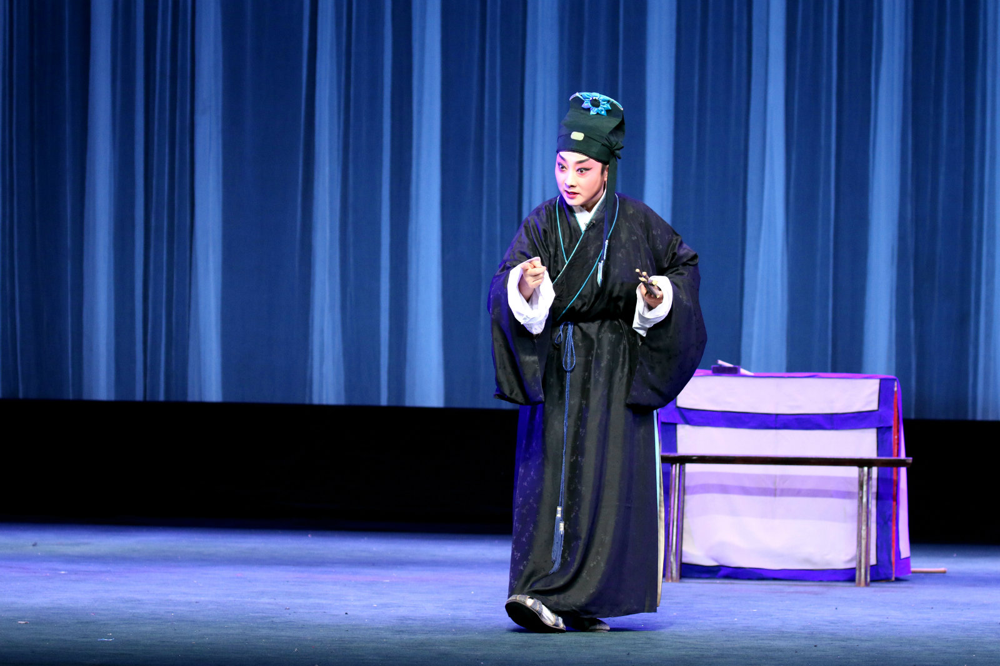
评雪辨踪classic operas
×
评雪辨踪
中文术语：评雪辨踪
英文术语：A Couple Reconciling after a Misunderstanding
中文释义：《评雪辨踪》取材于明传奇《吕蒙正风雪破窑记》，讲述相府小姐刘翠屏和丈夫吕蒙正在寒窖过着贫苦生活，她虽出生娇贵，但却是个重才重德的女子。一日，吕蒙正出外归来，发现窑外雪地上有男女足迹，怀疑妻子有玷名节，因而引起一场争吵，最后辨明足迹，误会消释，夫妇二人重归和好。
英文释义：A Couple Reconciling after a Misunderstanding is based on the legendary
work in the Ming Dynasty, The Records of A Tumbledown Cave. It tells the story of
Lyu Mengzheng and his wife Liu Cuiping. Liu Cuiping, the daughter of the Prime
Minister, though born in a noble family, was able and virtuous and lived in the
tumbledown cave with her husband Lyu Mengzheng. One day, Lyu came back home
and found some suspicious footprints in the snow outside the cave. He doubted that his
wife had affairs with another man thus quarreled with Liu. However, when Lyu
distinguished that the footprints were not from some other man, the couple reconciled.
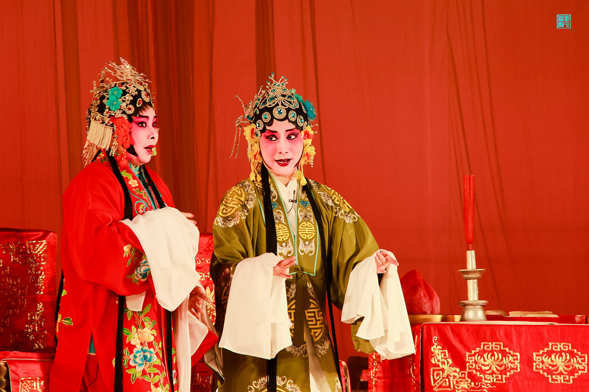
御河桥classic operas
×
御河桥
中文术语：御河桥
英文术语：Yuhe Bridge
中文释义：《御河桥》为川剧高腔传统剧目，讲的是裴瑞卿帮助宣家儿子登鳌与柯家女儿宝珠有情人终成眷属的故事。
英文释义：Yuhe Bridge is one of the traditional dramas of high-pitched tune of Sichuan
Opera. It describes the love story of Xuan Dengao and Ke Baozhu. Because of their
love, the two were split apart by their families. However, with the help of Pei Ruiqing,
finally, they reunited.
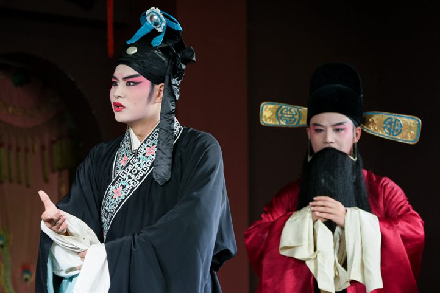
托国入吴classic operas
×
托国入吴
中文术语：托国入吴
英文术语：Entrusting State Affairs Before Going to the State of Wu
中文释义：《托国入吴》属于川剧传统折子戏，讲述的是越王勾践兵败入吴前夕，嘱托国事之典故。
英文释义：Entrusting State Affairs Before Going to the State of Wu is a traditional
excerpt play of Sichuan Opera. It tells the story of Gou Jian, the king of the Yue
Kingdom. He entrusted the state affairs to his officials before he was defeated by the
State of Wu.
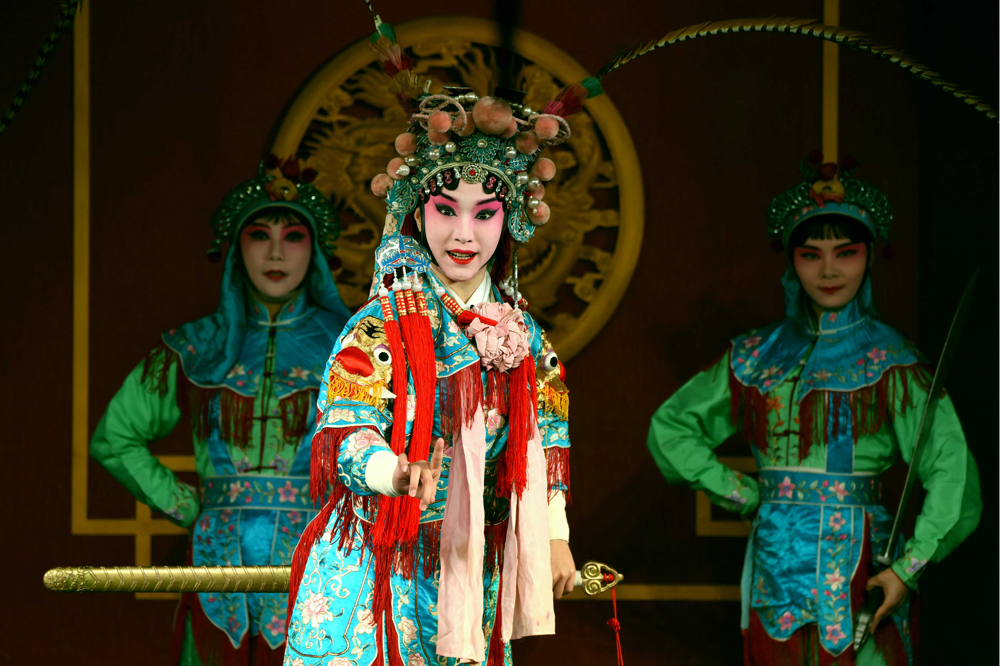
扈家庄classic operas
×
扈家庄
中文术语：扈家庄
英文术语：Hujiazhuang Fortress
中文释义：取材于《水浒传》，讲宋江引兵攻祝家庄，祝彪未婚妻扈三娘自邻庄来援，与梁山好汉酣斗，擒获王英，力败众头领，后被林冲所擒。
英文释义：Hujiazhuang Fortress is based on Water Margin. It describes the story of Hu
Sanniang, in which she came to the neighbor fortress, Zhujiazhuang, helping people
there to withstand attacks led by Song Jiang. Hu Sanniang fought bravely with
Liangshan heroes and captured Wang Ying. She defeated the leaders but finally was
caught by Lin Chong.
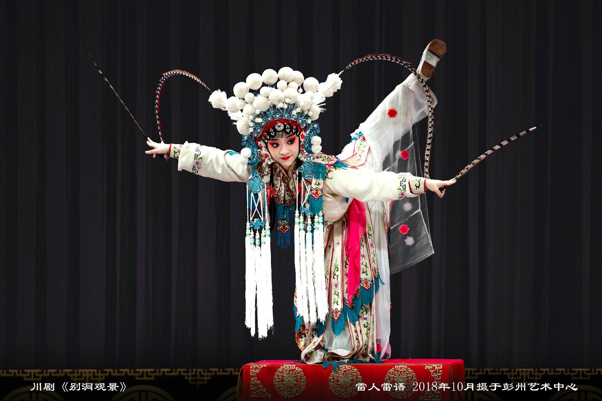
别洞观景classic operas
×
别洞观景
中文术语：别洞观景
英文术语：The Fairy Touring the Human World
中文释义：《别洞观景》是《宫人井》之一折。白鳝仙姑趁兄长夔龙去赴东皇寿筵之机来到人间，一路上被山川美景以及渔樵耕读所吸引，决心不再回到青海庄修道。该剧是一出重在表演的花旦戏。
英文释义：The Fairy Touring the Human World is a part of Gongren Well. It describes
the story of the fairy Bai Shan, in which she furtively came to the human world when
her brother Kui Long went to attend the birthday party of the East Emperor. Bai Shan
was so attracted by the natural beauty of mountains and rivers that she decided not to
go back to Qinghaizhuang Taoist temple to continue her spiritual practices. It is a
drama of Huadan which focuses mainly on acting.
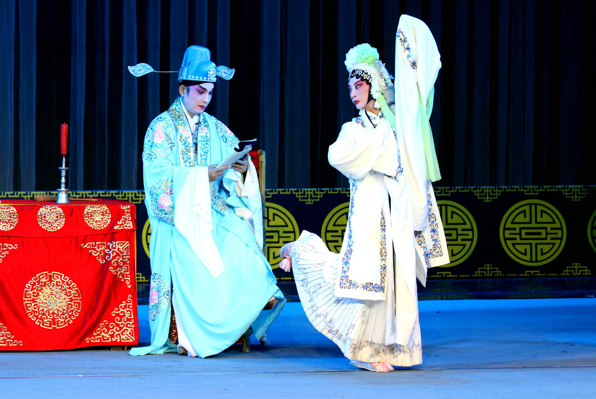
情探classic operas
×
情探
中文术语：情探
英文术语：Test for a Disloyal Husband
中文释义：《情探》，《焚香记》之一折，清末四川大儒赵熙作。写名妓焦桂英与秀才王魁的恩爱情仇故事。王魁忘恩负义，气得焦桂英自缢而死。其鬼魂带着鬼卒，来活捉王魁偿还命债。为了试探王魁对他们以往感情的态度，焦桂英以情动之，却只试探出了王魁的丑恶灵魂。为了试探王魁对他们以往感情的态度，焦桂英以情动之，却只试探出了王魁的丑恶灵魂。
英文释义：Test for a Disloyal Husband is a part of Burning Incense written by Zhao
Xi, a great writer in Sichuan of the late Qing Dynasty. It describes the story of Jiao
Guiying and Wang Kui, in which Jiao angrily committed suicide because of Wang’s
betrayal. After that, Jiao’s soul came with other ghosts to capture Wang Kui and asked
him to pay back her life. In order to test Wang Kui’s attitude to their love, Jiao Guiying
showed her affection but only found Wang Kui’s ugly spirit.
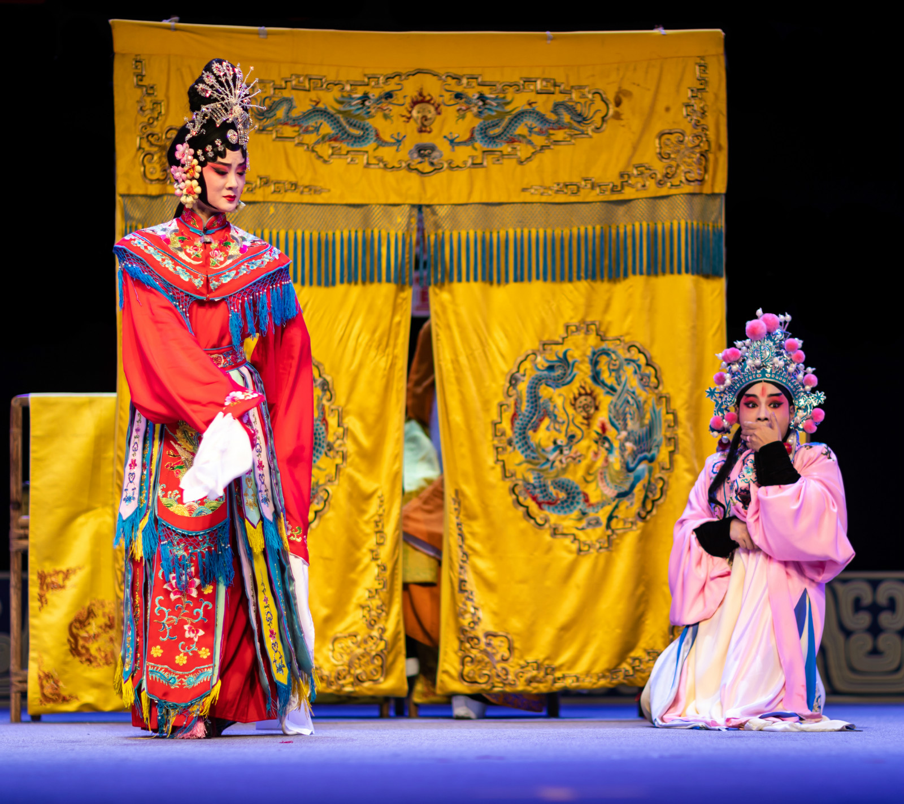
问病逼宫classic operas
×
问病逼宫
中文术语：问病逼宫
英文术语：Usurping the Throne by Visiting the Ill Emperor
中文释义：《问病逼宫》是《隋朝乱》之一折。讲述隋文帝病危，次子杨广趁省视父疾之机入宫，探听虚实，图谋夺取王位的故事。
英文释义：Usurping the Throne by Visiting the Ill Emperor is a part of The Coup of
the Sui Dynasty. In this story, Yang Guang, the second son of the very sick Emperor
Wen of Sui, went to the imperial palace on the pretext of visiting his father, scheming
to usurp the throne.
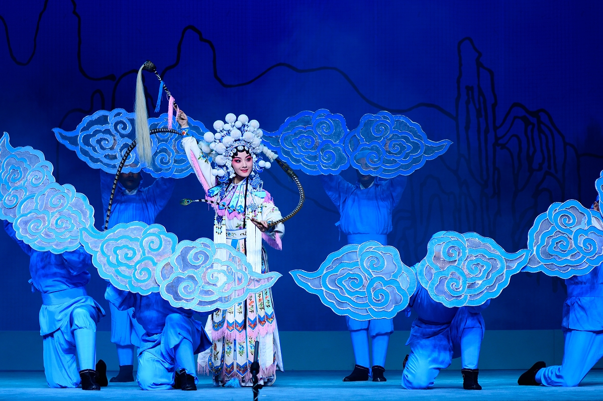
白蛇传classic operas
×
白蛇传
中文术语：白蛇传
英文术语：The Legendary White Snake
中文释义：中国民间流传久远的白素贞与许仙真诚相爱的优秀神话故事，而川剧《白蛇传》又独具奇异的艺术风采，与其它戏曲剧种不同的是川剧《白蛇传》更注重武打和做工，青蛇这一角色也很有特点，文戏时是妩媚的小丫鬟，武戏时则变为勇武的男将，这一点是川剧《白蛇传》所特有的。另外，戏中穿插有川剧“变脸”等绝活，戏剧场面宏大、壮丽，全不似一般曲折委婉的爱情戏，给人以激烈壮美的感觉。
英文释义：The Legendary White Snake is a tale passing on for a long time in the civil
society of China, which tells the story of Bai Suzhen and Xu Xian. The Sichuan Opera
version of the White Snake has its unique art feature. Different from other kinds of
operas, the Sichuan Opera version pays more attention to martial arts and stage art. The
character of Xiaoqing is also a special highlight of The Legendary White Snake in
Sichuan Opera version. When performing mainly by singing, Xiaoqing is a delicate servant girl, while showing acrobatics, Xiaoqing becomes a brave warrior. In addition,
skills like face changing are shown and the scene is so grand that it gives people a
magnificent and beautiful feeling, unlike the general zigzag romantic dramas.
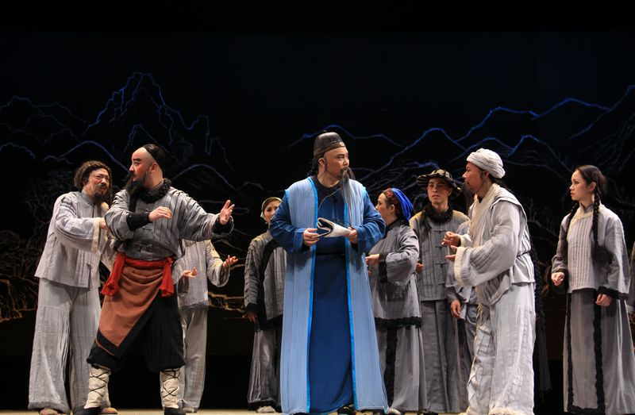
巴山秀才classic operas
×
巴山秀才
中文术语：巴山秀才
英文术语：The Scholar of Bashan Mountain
中文释义：历史剧《巴山秀才》取材于清末两宫太后垂帘听政时期发生在四川的“东乡惨案”，讲述秀才孟登科为平冤案，毅然上书朝廷，却被赐死的故事。由著名当代戏剧家巴蜀鬼才魏明伦和南国编剧，四川省川剧院院长陈智林等主创，是经典川剧代表作。
英文释义：The Scholar of Bashan Mountain is a historical drama based on the tragedy
of Dongxiang, Sichuan, happening in the late Qing Dynasty, during which the empress
dowager Cixi controlled the government. It describes the scholar Meng Dengke, in
which he handed a petition to the royal court to overturn the injustice, but finally, he
was killed by the empress dowager. It is a representative drama of Sichuan Opera and
written by the well-known scriptwriters Wei Minglun and Nan Guo. And Chen Zhilin,
the Dean of Sichuan Opera Theater of Sichuan province, starred it.
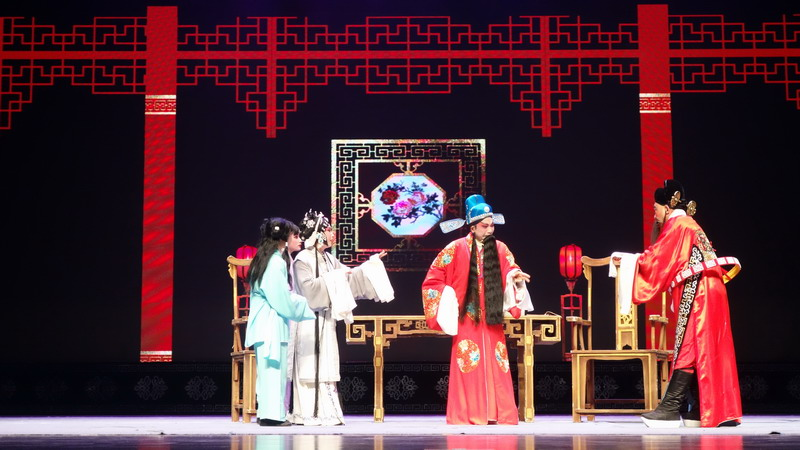
秦香莲classic operas
×
秦香莲
中文术语：秦香莲
英文术语：Qin Xianglian
中文释义：《秦香莲》是川剧经典剧目。讲述的是北宋年间，陈世美贪图富贵，抛妻弃子，又派人杀害妻儿，遭到妻子状告，被包拯斩杀的故事。
英文释义：Qin Xianglianis a traditional drama of Sichuan Opera. It describes the story of Qing Xianglian, in which she sued her husband Chen Shimei because Chen discarded and planned to murder her and their children for riches and honor. Finally, the just official Bao Zheng sentenced Chen Shimei to the death penalty.
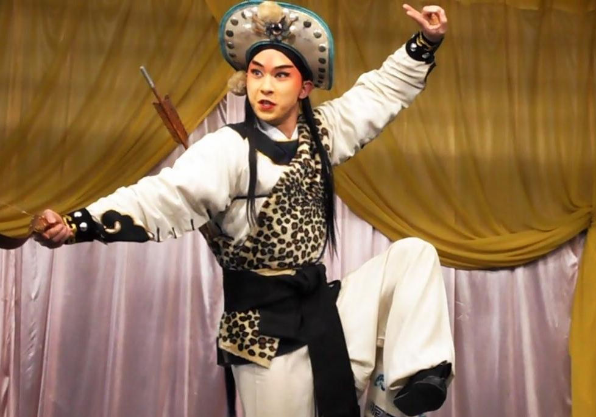
花荣射雕classic operas
×
花荣射雕
中文术语：花荣射雕
英文术语：Hua Rong Shoots the Eagle
中文释义：含嫣同嫂嫂一起去效外游春，巧遇少年猎户花荣，二人一见钟情。通过“变胡子”等表演技巧，将人物心理外化，妙趣横生。
英文释义：It describes the love story of Hua Rong and Han Yan. Han Yan went to the outskirts with her sister-in-law for spring outing, where they met the young hunter Hua Rong. Hua Rong and Han Yan fell in love with each other at first sight. Through performing skills like “changing beard”, this drama expresses the mental activity of characters, which is full of fun.
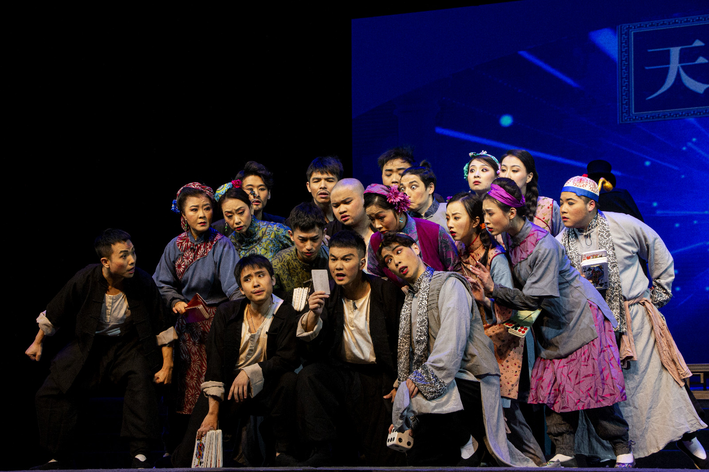
好女人坏女人classic operas
×
好女人坏女人
中文术语：好女人坏女人
英文术语：Good Woman and Bad Woman
中文释义：川剧《好女人坏女人》由巴蜀鬼才魏明伦操刀，取材于德国作家布莱希特的《四川好人》。魏明伦将德国人臆想的四川故事，变成了由四川人再创的德国寓言。该剧讲述了青楼女子沈黛在做好人不成后，以天使和魔鬼两副面孔交替出现的故事，旨在表明“没有永远的好人，也没有一成不变的坏人”这个主题，同时批判了欲壑难填及人与人之间的尔虞我诈。
英文释义：Good Woman and Bad Woman is a play of Sichuan Opera based on The
Good Person of Szechwan, a drama written by German writer Bertolt Brecht. Wei
Minglun, “the Wizard of Bashu”, changed the story of Sichuan in German writer’s
imagination into a German allegory rewritten by Sichuan People. It describes the story
of a prostitute named Shen Dai, who wanted to be a good person but failed, then she
showed people both her kind and evil sides alternately. It indicates the theme that no
forever good people as well as bad people and also it criticizes the endless desires of
human, and distrust and intrigues between people.
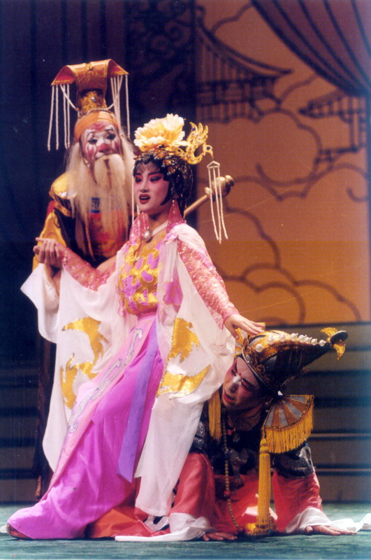
中国公主杜兰朵classic operas
×
中国公主杜兰朵
中文术语：中国公主杜兰朵
英文术语：Chinese Princess Turandot
中文释义：川剧创作《中国公主杜兰朵》改编自《一千零一夜》中的《图兰朵》。被誉为“巴蜀鬼才”的名编剧魏明伦从普契尼的原作中提炼形成了崭新的思想主题，魏明伦巧妙为“图兰朵”这位外国公主更换了“国籍”，给故事赋予了全新背景，再通过川剧的形式全新演绎出《中国公主杜兰朵》。
英文释义：Chinese Princess Turandot is adapted from “Turandot” of The Thousand
and One Nights by Wei Minglun, who is known as “the Wizard of Bashu”. Based on
the original work of Puccini, Wei changed the nationality of the foreign princess
Turandot and set a new background for the story, which forms a new theme and is
performed as Chinese Princess Turandot.
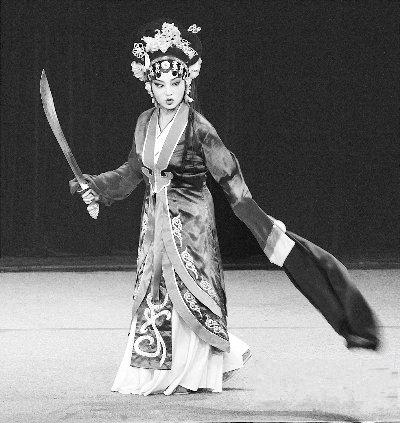
马克白夫人classic operas
×
马克白夫人
中文术语：马克白夫人
英文术语：Lady Macbeth
中文释义：由著名剧作家徐棻根据莎士比亚作品《麦克白》改编创作，用马克白夫人的一个梦，以独特的视角表现了马克白夫妇弑君篡位，最后在极度恐惧中死去的心理过程。
英文释义：Lady Macbeth is adapted from the work of Shakespeare, Macbeth, by the
famous playwright Xu Fen. The drama in a special perspective uses a dream of Lady
Macbeth to describe her mental process for killing the king and usurping the throne.
She eventually died in terrible fears.
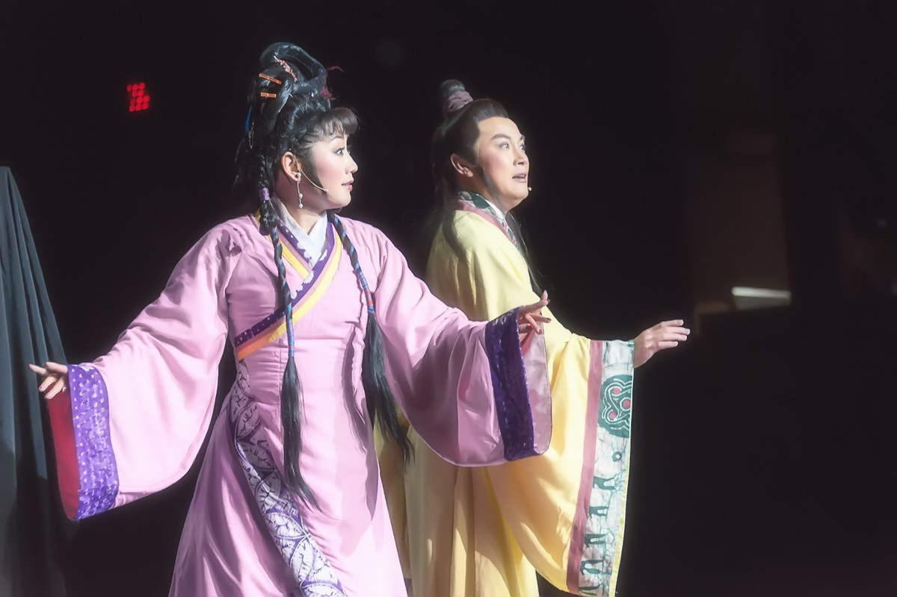
欲海狂潮classic operas
×
欲海狂潮
中文术语：欲海狂潮
英文术语：Surges of the Desire Sea
中文释义：《欲海狂潮》是根据诺贝尔文学奖获得者尤金·奥尼尔的话剧《榆树下的欲望》改编而成。全剧围绕“欲望”这一主题，通过一个家庭中父子、夫妻、母子之间的畸形关系的缩影给人们以深刻启示。剧中完美的融入了川剧变脸(川剧享誉世界的绝技)等。
英文释义：Surges of the Desire Sea is based on the Nobel Prize laureate Eugene's
drama Desire under the Elms. Centering on the theme of desire, the play gives people
revelation through the twisty relations between father and son, husband and wife, and
mother and son. Face changing, the world-renowned skill of Sichuan Opera, was
tactfully included in the drama.
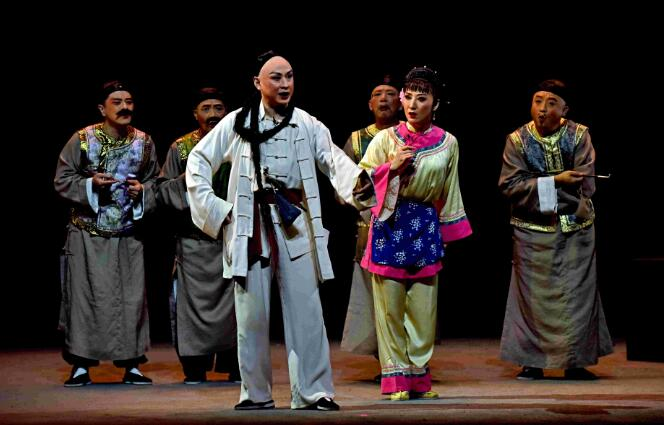
死水微澜classic operas
×
死水微澜
中文术语：死水微澜
英文术语：A Ripple from the Stagnant Water
中文释义：川剧《死水微澜》是中国当代戏曲的经典之作，来源于著名作家李劼人的同名小说，通过讲述晚清末年四川天回镇上少女邓幺姑追求爱情的曲折经历，反映出当时国家的深忧内患影响着人们命运变化的悲欢故事。
英文释义：A Ripple from the Stagnant Water is a classic work of modern Chinese
operas, adapted from the novel of the same name written by Li Jieren. Through the story of Deng Yaogu, a girl who lived in Tianhui town, Sichuan in the late Qing Dynasty
suffering a lot from pursuing love, the play demonstrates that people’s destiny of that
era was connected with national crisis home and abroad.
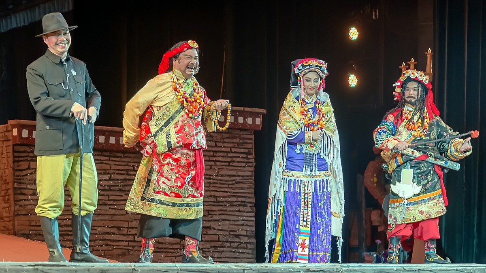
尘埃落定classic operas
×
尘埃落定
中文术语：尘埃落定
英文术语：Dust Settled Down
中文释义：根据著名作家阿来同名长篇小说改编，全剧围绕麦其土司个人命运与时代潮流的冲突展开，叙述了土司家族的衰落。
英文释义：Dust Settled Down is adapted from the novel of the same name of the notable
writer A Lai. Centering on the contradiction between the destiny of Mai Qi, the Kham
Tibetan chieftain, and the trend of the time, the drama describes the decline of the family
of the Kham Tibetan chieftain.
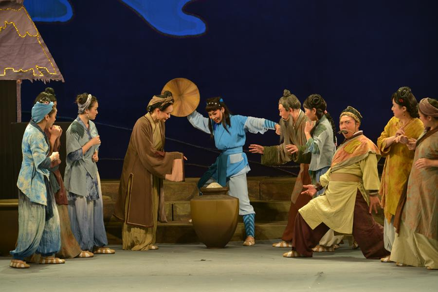
望娘滩classic operas
×
望娘滩
中文术语：望娘滩
英文术语：Shoals Formed by Looking Back at the Mother
中文释义：李明璋于1953 年创作的剧本。讲述农家少年聂郎与母亲相依为命。一年天旱饥荒，聂郎上山割草，偶拾宝珠。恶霸问讯，率家丁前来抢夺，聂郎情急之中，吞珠入腹，化为蛟龙，将恶霸等人卷入浪涛汹涌的岷江之中。
英文释义：The drama was created by Li Mingzhang in 1953. It describes the story of a rural teenager Nie Lang. Nie Lang lived with his mother and they leaned with each other for support. In the year of drought and famine, Nie Lang found a magic pearl when he was collecting herds on the mountain. Hearing the news, the bully in the village and his servants came to grab the pearl. In a panic, Nie Lang swallowed the pearl and suddenly became a dragon, involving all the bullies into the turbulent Minjiang River.
卧虎令classic operas
×
卧虎令
中文术语：卧虎令
英文术语：The Insubordinate Magistrate
中文释义：川剧《卧虎令》源出于《后汉书董宣传》，是新编历史剧。
剧情：汉光武帝期间，洛阳县令董宣，不畏皇权，甘心以身殉法，带着坚定信念和凛然正气上殿面君的故事。
英文释义：The Insubordinate Magistrateis based on Biography of Dong Xuan of The
History of the Later Han Dynasty. It is a new adapted historical story, in which Dong
Xuan, the magistrate of Luoyang County during the rule of Emperor Guang Wu, refused
to yield to the imperial power and was willing to die for justice. When facing the
emperor at the imperial court, he was full of determination and integrity.
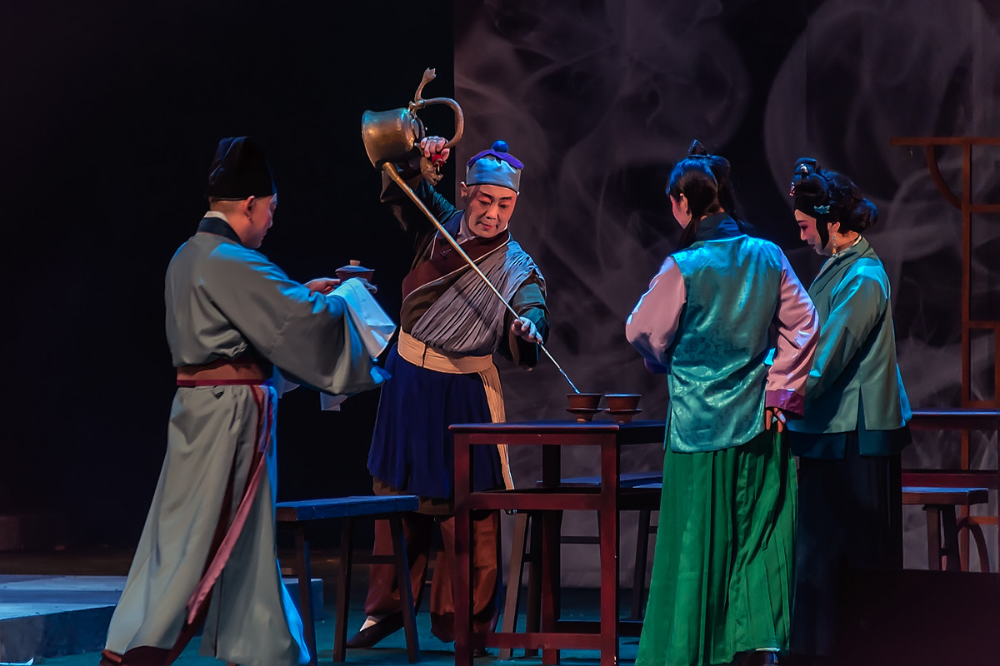
草民宋世杰classic operas
×
草民宋世杰
中文术语：草民宋世杰
英文术语：The commoner Song Shijie
中文释义：讲述的是宋士杰巧用计谋捕捉到官官相卫、行贿受贿的证据，帮助民女杨素贞平反冤屈，打赢“烫手”官司，并告倒三个“大老虎”的故事。
英文释义：It describes the story of Song Shijie, in which he got the evidence of official
corruption and bribe by ploy, helping Yang Suzhen overturn injustice and win the
difficult case as well as defeat “the three tigers (three bad guys)”.
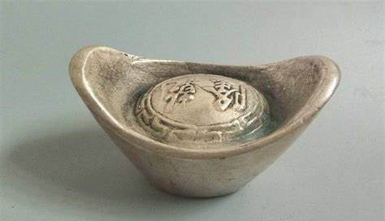
银两Money
×
银两
中文术语：银两
英文术语：Money
中文释义： 银两是古代中国的一种货币单位，通常用来指代财富或资金。在现代中文中，这个词已经很少使用，通常被泛指为“钱”。
英文释义： Yinliang (Silver Taels) was a currency unit in ancient China, typically referring to wealth or money. In modern
Chinese, the term is rarely used and is generally translated as "money."
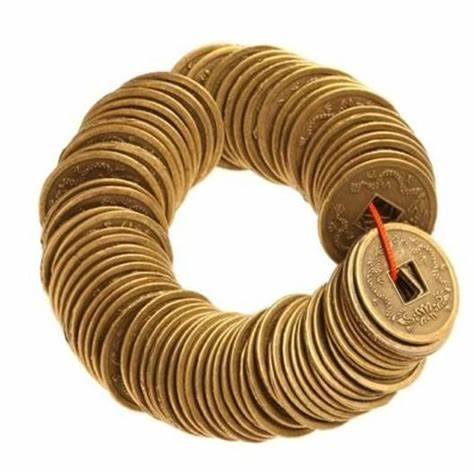
盘缠Money
×
盘缠
中文术语：盘缠
英文术语：Money
中文释义： 盘缠是指旅行或生活所需的费用，通常用于古代背景下。在现代语境中，这个词的文化内涵较少，多指代“钱”。
英文释义： Panchan refers to the money or expenses needed for travel or living, typically used in an ancient context. In
modern usage, the term carries little cultural connotation and is generally translated as "money."
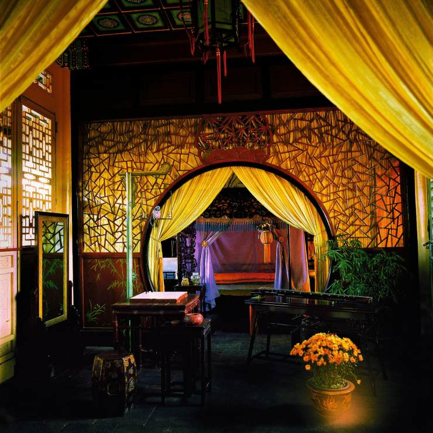
闺房Boudoir
×
闺房
中文术语：闺房
英文术语：Boudoir
中文释义： 闺房指的是未婚女子的私室，在古代中国语境中常用。英文中的“boudoir”一词与其含义相近，也多用于古典背景中。
英文释义： Guifang refers to the private room of an unmarried girl, commonly used in ancient Chinese contexts. Its English
counterpart "boudoir" has a similar meaning and is also often used in classical contexts.
清白之身Be Unblemished and Vestal
×
清白之身
中文术语：清白之身
英文术语：Be Unblemished and Vestal
中文释义： 清白之身是指在剧中表现出忠贞和清白的女性形象，这一术语背后有特定的文化背景。在古代中国，女性在婚前若有任何不洁之事，会受到社会的指责和羞辱。因此，为了让目标读者理解其含义，采用了“be unblemished and
vestal”这种中和处理的翻译方式。
英文释义：Qingbai Zhisheng describes the portrayal of a chaste and faithful woman who would sacrifice her life to maintain
her reputation. This term has a specific cultural background in ancient China, where a woman would be shamed if she
engaged in any sexual relationship before marriage. To make its connotative meaning accessible to target readers, the AR
naturalized it as "be unblemished and vestal."

{kind=link}
{kind=link}
{kind=link}
{kind=link}
{kind=link}
{kind=link}
{kind=link}
{kind=link}
{kind=link}
{kind=link}
{kind=link}
{kind=link}
{kind=link}
{kind=link}
{kind=link}
{kind=link}
{kind=link}
{kind=link}
{kind=link}
{kind=link}
{kind=link}
{kind=link}
{kind=link}
{kind=link}
{kind=link}
{kind=link}
{kind=link}
{kind=link}
{kind=link}
{kind=link}
{kind=link}
{kind=link}
{kind=link}
{kind=link}
{kind=link}
{kind=link}
{kind=link}
{kind=link}
{kind=link}
{kind=link}
{kind=link}
{kind=link}
{kind=link}
{kind=link}